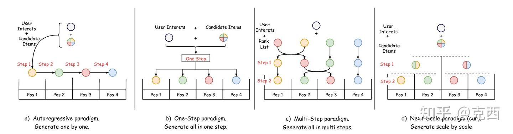
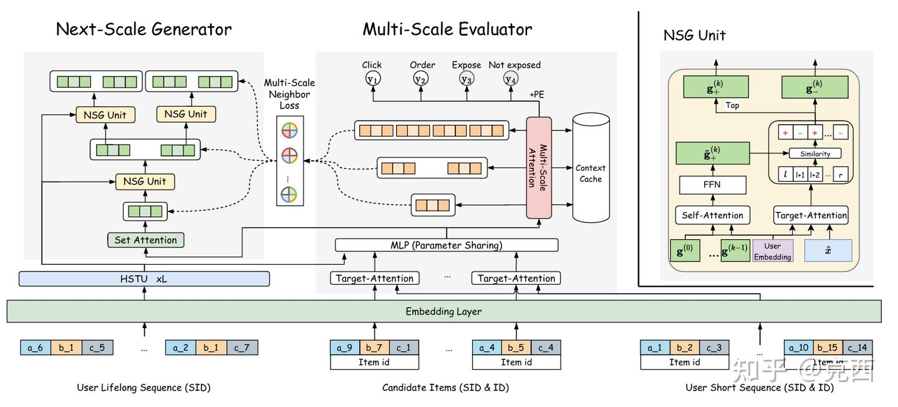
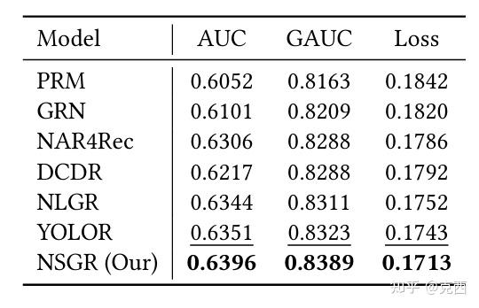

0. 写在前面
这篇论文讨论的是推荐系统最末端的 reranking 重排。
现代推荐系统简化成三段：
召回 matching
-> 粗/精排 ranking
-> 重排 reranking那么重排阶段面对的问题不是“单个 item 该不该推荐”，而是：给定一组候选 item，如何生成一个整体最优的展示列表？
这和 ranking 很不一样。Ranking 通常对 item 单独打分，再排序；reranking 要考虑位置、上下文、相邻 item 之间的互相影响、多样性、转化链路和整页收益。美团外卖这种场景尤其明显：一个店铺或商品放在第 1 位、第 3 位、第 8 位，效果完全不同；两个相似商家挨在一起，也可能互相抢点击。
Y-3EC7">论文提出的 Next-Scale Generation Reranking，核心思想是：不要从左到右一个个生成，也不要一步生成完整列表，而是用树形 coarse-to-fine 的方式，逐层把候选集合切成前半段/后半段，最后得到完整排序。
线上收益也很好：在美团 CPS 业务中，NSGR(20) 相比 baseline YOLOR(8)，线上 CTR +2.89%、GMV +3.15%，并且 cost 还减少 1.4ms。该方法已经部署在美团外卖平台，服务百万级用户。
与之前的 MTGR 相比：
MTGR：扩展 ranking model，让候选打分更强
NSGR：扩展 reranking model，让最终列表组合更优1. 重排为什么是一个组合优化问题
假设 ranking 阶段给了 20 个候选，reranking 要从中排出 20 个位置。理论排列空间是：
20! ≈ 2.43e18如果只取前 8 个重排，也有：
8! = 40320这说明重排的难点不是单个 item 打分，而是排列组合空间巨大。
传统 point-wise ranking 只学习：
score(user, item)然后按分数排序。它忽略了：
- item 之间的互相影响。
- 不同位置的曝光价值。
- 列表整体多样性和互补性。
- 转化目标和整页 GMV 的组合效应。
因此 reranking 的目标更接近：
argmax_list Utility(user, ordered_list)问题是，所有 permutation 都评估一遍在线不可行。NSGR 就是在这个组合空间里找一种高效生成优质列表的方法。
2. 现有生成式重排的三类范式

论文把现有 generative reranking 分成三类。
2.1 Autoregressive：从左到右一个个生成
这种方法类似语言模型：
position 1 -> position 2 -> position 3 -> ...优点是局部依赖强。生成第 k 个位置时，可以知道前面已经放了什么。
缺点也明显：
- 慢，需要逐位置解码。
- 只能看已生成部分，缺少对未来位置的全局规划。
- 早期错误会传递到后面。
在重排里，这很危险。因为第 1 位选择不仅影响第 2 位，还影响整页结构。如果只按左到右贪心，很容易局部最优。
2.2 One-step：一步生成完整位置概率矩阵
这种方法一次性输出所有 item 到所有 position 的概率：
\(P(item_i -> position_j)\)
优点是快，有全局视角。
缺点是太粗。一步直接从候选集合跳到完整排列，缺少逐层细化过程，复杂业务场景下建模难度很大。
2.3 Multi-step：从初始列表逐步交换
这类方法从 ranking 给出的初始列表出发，每次交换 1-2 个 item，逐步接近更优列表。
优点是比 one-step 更细，且比 autoregressive 更有全局修正空间。
缺点是容易陷入局部最优。排列空间是非单调的，有时候一个局部交换看起来不好，但连续几步之后整体变好。只做局部 swap 很容易走不出去。
3. NSGR 的基本想法：Next-Scale 生成
NSGR 提出第四种范式：next-scale generation。
先决定哪些 item 在前半段、哪些在后半段；
再分别决定每个半段里的前半段和后半段；
不断二分，直到每个叶子节点对应一个最终位置。如果列表长度是 4，生成过程可以理解为：
候选集合 {A, B, C, D}
第 1 层：
选出应该进入前 2 位的 item
剩下进入后 2 位
第 2 层：
在前 2 位集合里选出第 1 位和第 2 位
在后 2 位集合里选出第 3 位和第 4 位
最终得到完整列表如果列表长度是 8，则是：
8 -> 4 + 4 -> 2 + 2 + 2 + 2 -> 1 + ... + 1这就是论文说的：
one-generates-two, two-generate-four它的好处是同时有全局和局部视角：
- 顶层二分时看全局，决定大致哪些 item 该靠前。
- 底层二分时看局部，决定相近位置之间的细粒度顺序。
这比 AR 更全局，比 one-step 更细，比 multi-step 更不容易困在局部 swap。
4. NSGR 总体结构

NSGR 有两个核心模块：
NSG: Next-Scale Generator
MSE: Multi-Scale Evaluator再加一个训练机制：
MSNL: Multi-Scale Neighbor Loss分工如下：
- MSE：负责评估一个列表的 list-wise value，类似 reward model / evaluator。
- NSG：负责用树形 coarse-to-fine 方式生成最终排序。
- MSNL：用 MSE 对生成列表和邻居列表打分，构造相对训练信号，指导 NSG。
和很多生成式重排框架一样，采用 generator + evaluator 的两阶段思路。但 NSGR 的特点是：generator 和 evaluator 都是 tree-based multi-scale 结构，训练信号也在多尺度节点上构造。
5. 输入表示：用户兴趣、候选 item 和短期行为
图 2 里 NSGR 的输入主要有三块。
5.1 用户长期兴趣
论文使用用户 lifelong sequence，并用 SID 表示：User Lifelong Sequence
例如：
\(a_6 \ b_1 \ c_5 \ ... a_2 \ b_1 \ c_7\)
这和生成式推荐中的 semantic ID 思路一致。长期序列用于提取用户全局兴趣。
5.2 候选 item
候选 item 同时使用：
SID + IDSID 提供语义结构，ID 保留具体 item 的身份记忆。
5.3 用户短期行为
短期序列也使用：
SID + ID短期行为用于捕捉近期意图，例如用户最近正在看某类商家或商品。
这三类输入会进入 HSTU、Set Attention、Target Attention 等模块，形成候选 item 的上下文表示。
6. Multi-Scale Evaluator：评价一个列表
MSE 的目标是：给定用户 u 和有序列表 L，估计 list-wise utility
它不是只对 item 单独打分，而是要让每个位置的预测都感知多尺度上下文。
6.1 列表语义向量
对一个候选列表，MSE 先得到每个位置上的 item 表示：
\(L = {x_1, x_2, ..., x_m}\)
这里 x_i 已经融合了 item 语义、用户兴趣、短期行为等信息。
6.2 多尺度上下文
MSE 对每个位置提取不同尺度的上下文。例如列表长度为 8，对某个位置来说，可以看：
全列表尺度：positions 1-8
半列表尺度：positions 1-4 或 5-8
局部尺度：positions 1-2, 3-4, ...论文用 multi-scale self-attention 来计算这些上下文：
scale 1: whole list context
scale 2: half-list context
...
scale log2(m): pair-level context这样每个 item 的得分不仅看自己，也看它所在的局部组、半局部组和全局列表。
6.3 位置感知预测
最终每个位置的预测整合三类信息：
item semantics
multi-scale context
position embedding可以理解成：
\(\[ \hat{y}_i = \operatorname{sigmoid}\left(\operatorname{MLP}\left(item_i, context_i, position_i\right)\right) \]\)
然后列表价值是各位置预测的聚合：
\(\[ \operatorname{value}(\operatorname{list}) = \sum_i \hat{y}_i \]\)
这个 value 可以根据业务目标调整，例如：
IMPR
CVR
GMVMSE 用线上日志训练，包括曝光、点击、转化等信号。损失是典型的逐位置 BCE，但它的表示是 list-aware 的。
7. Next-Scale Generator：树形生成列表
NSG 是论文最核心的模块。它做的是：
假设当前节点负责位置区间 [l, r]，对应一个候选子集：
\(X_{l:r} = {x_l, x_{l+1}, ..., x_r}\)
NSG 要把它拆成前后两部分，判断每个 item 在当前尺度上该“靠前”还是“靠后”。
7.1 Item priority
首先，NSG 给每个 item 计算一个 individual priority：
\(p_i = MLP_p(x_i)\)
它表示 item 自身相关性。这个分数不是最终排序，只是后续关系建模的一个输入。
7.2 Pairwise relationship
然后 NSG 对每对 item 判断关系：
competitive suppression
complementary enhancement
neutral coexistence这三个关系很有推荐味道。
- competitive suppression：两个 item 竞争强，例如两个相似商家同时出现，强者压制弱者。
- complementary enhancement：两个 item 互补，例如主食和饮品、套餐和小吃，组合更好。
- neutral coexistence：基本互不影响。
论文用 pairwise classifier 输出这三类关系的概率。
7.3 Asymmetric influence
竞争关系是非对称的：高优先级 item 可以压制低优先级 item
互补关系更接近对称：两个 item 互相增强
NSG 用这些关系计算 item 之间的影响权重，再更新每个 item 的表示。
这一点很重要。重排不是只看单点相关性，而是看组合关系。NSG 把组合关系显式分成竞争、互补、中性，比单纯 self-attention 更有结构化归纳偏置。
7.4 Binary split
更新 item 表示后，NSG 会计算每个 item 和当前树节点 anchor 的匹配分数：
\(Sim_i = MLP_{scor}e(item_i, user_{context}, tree_{anchor})\)
然后取前一半进入当前区间的 front half：
Flag+ = 1 if rank(i) < half_size剩余 item 进入 back half。
递归执行，最后每个叶子节点只剩一个 item，对应最终位置。
8. 一个直观例子：长度为 8 的列表如何生成
假设候选有 8 个：
A B C D E F G HNSG 第一步不是选第 1 位，而是先分组：
前 4 位候选：A C F H
后 4 位候选：B D E G第二步在两个组内继续拆：
前 4 位组：
前 2 位候选：C H
后 2 位候选：A F
后 4 位组：
前 2 位候选：D G
后 2 位候选：B E第三步继续拆到单个位置：
pos1: H
pos2: C
pos3: F
pos4: A
pos5: D
pos6: G
pos7: E
pos8: B最终列表：
H C F A D G E B这个过程的特点是：高层先决定大致靠前/靠后，低层再决定局部顺序。
9. Multi-Scale Neighbor Loss
Generator + evaluator 框架有一个老问题：目标不一致。
Evaluator 学的是：给一个列表，估计它的价值
Generator 学的是：在巨大排列空间里生成高价值列表
如果直接用 evaluator 的绝对分数训练 generator，信号会很稀疏，也容易让 generator 只是拟合曝光分布或局部模式。
NSGR 的解决方案是 Multi-Scale Neighbor Loss, MSNL。
核心思想：
不要只看生成列表本身的绝对分数；
构造多个邻居列表，
比较生成列表和邻居列表的相对 value，
在每个 tree scale 上给 generator 训练信号。9.1 邻居列表怎么构造
对 NSG 生成的列表 L_g，构造 neighbor lists：
- 在
L_g内部交换两个 item。 - 把
L_g中某个 item 和候选池中其他 item 交换。
这些邻居列表相当于生成列表附近的 counterfactual alternatives。
9.2 用 MSE 计算相对 reward
MSE 分别评估： \(value(L_g)、value(L_{neighbor})\)
然后计算相对差： \(r_{neighbor} = value(L_{neighbor}) - value(L_g)\)
如果某个邻居比当前生成列表更好，generator 应该被拉向那个方向；如果更差，就应该远离。
9.3 为什么是 multi-scale
因为 NSG 是树形生成，每个节点代表一个尺度：
全局二分
半局部二分
局部二分MSNL 不只在最终列表上给信号，而是在多尺度节点上给信号。论文还说 NSG 和 MSE 有相似树结构，因此可以用 MSE 的多尺度表示来指导 NSG 的多尺度表示，并把 neighbor list 的多尺度向量缓存起来，避免重复计算。
这就是 MSNL 的价值：它把 evaluator 的 list-wise signal 转成 generator 在树形生成过程中可用的 scale-wise guidance。
10. 为什么 NSGR 比 AR/NAR/Multi-step 更合理
可以把四类方法对比如下：
| 范式 | 优点 | 缺点 |
|---|---|---|
| Autoregressive | 局部依赖强 | 慢，缺少未来全局视角，误差传播 |
| One-step | 快，有全局视角 | 太粗，缺少局部细化 |
| Multi-step swap | 可逐步修正 | 易陷入局部最优 |
| Next-scale | 全局到局部逐层细化 | 依赖树结构和训练信号设计 |
NSGR 的优势来自两点：
- 树形生成结构把排列空间分层搜索。
- MSE/MSNL 在多尺度上提供相对训练信号。
它不像 AR 那样“从左到右窄视角”，也不像 one-step 那样“一口吃完整排列”。它更像在做 coarse-to-fine 的组合优化。
11. 实验设置
论文使用两个数据集。
| Dataset | Users | Items | Records |
|---|---|---|---|
| Taobao Ad | 1,141,729 | 99,815 | 26,557,961 |
| Meituan | 5,685,119 | 17,264,613 | 242,549,848 |
Taobao Ad 是公开广告数据，使用前 7 天训练，第 8 天测试。
Meituan 是美团外卖工业数据，来自 2025 年 8 月，包含 15 天、2.42 亿条交互记录、239 个特征、三个标签：
expose
click
conversion注意：样本是 list-level，每条样本包含同一请求列表里的所有 item。论文还过滤掉全 0 或全 1 标签的样本。
离线指标：AUC、GAUC、Loss、HR
线上指标：CTR、CVR、GMV、Cost(ms)

12. Evaluator 离线效果
论文在 Taobao Ad 和 Meituan 上对比多类 reranking 方法。
12.1 Taobao Ad
| Model | AUC | GAUC | Loss |
|---|---|---|---|
| PRM | 0.6052 | 0.8163 | 0.1842 |
| GRN | 0.6101 | 0.8209 | 0.1820 |
| NAR4Rec | 0.6306 | 0.8288 | 0.1786 |
| DCDR | 0.6217 | 0.8288 | 0.1792 |
| NLGR | 0.6344 | 0.8311 | 0.1752 |
| YOLOR | 0.6351 | 0.8323 | 0.1743 |
| NSGR | 0.6396 | 0.8389 | 0.1713 |
12.2 Meituan
| Model | AUC | GAUC | Loss |
|---|---|---|---|
| PRM | 0.8595 | 0.8573 | 0.1008 |
| GRN | 0.8643 | 0.8598 | 0.1001 |
| NAR4Rec | 0.8711 | 0.8636 | 0.0957 |
| DCDR | 0.8695 | 0.8616 | 0.0977 |
| NLGR | 0.8732 | 0.8644 | 0.0946 |
| YOLOR | 0.8749 | 0.8669 | 0.0932 |
| NSGR | 0.8902 | 0.8829 | 0.0842 |
NSGR 在 Meituan 上优势尤其明显。论文说相比最强 independent baseline，NSGR 在 Taobao/Meituan 上分别带来 0.0045/0.0153 AUC 和 0.0047/0.0160 GAUC 绝对提升。
在工业重排里，0.016 GAUC 是比较大的提升。
13. Generator 一致性：HR 指标
只看 evaluator 的 AUC/GAUC 不够。因为最终线上用的是 generator 生成列表。如果 generator 找不到 evaluator 认为好的列表，evaluator 再准也没用。
因此论文用 HR 衡量 generator 和 evaluator 的一致性：
HR = generator 产生的 permutation set 是否包含最优 list在 Meituan 上，结果如下：
| Model | HR@1% | HR@10% |
|---|---|---|
| PRM | 0.510 | 0.691 |
| GRN | 0.632 | 0.844 |
| NAR4Rec | 0.658 | 0.897 |
| NLGR | 0.784 | 0.916 |
| YOLOR | 0.822 | 0.943 |
| NSGR | 0.861 | 0.987 |
NSGR 的 HR@10% 达到 0.987，说明它生成的候选列表集合几乎总能覆盖 evaluator 认为很优的列表。
论文还在 8! = 40320 的完整排列空间里做了更细分析。NSGR 的 exact match rate 是 0.689；如果允许 2/3/4 个 item 的总偏差，准确率提升到：
Diff 2: 0.909
Diff 3: 0.933
Diff 4: 0.968这说明 NSGR 即使没完全命中最优排列，生成列表也非常接近最优排列。
14. 位置变化分析：NSGR 并不是暴力打乱
论文分析了 NSGR 输出位置和初始 ranking 位置之间的关系。
观察很有意思：
- 每个最终位置仍然倾向保留原本靠前的 item，说明 ranking 阶段的信号仍然重要。
- 距离越远，迁移概率越低，说明 NSGR 不是随机打乱。
- 前几个位置的分布更集中，说明头部位置更稳定，也更重要。
这符合工业重排直觉：重排不是推翻 ranking，而是在 ranking 给出的强排序基础上做 listwise 修正。
15. 消融实验：哪些模块最重要
Table 6：
| Model | AUC | GAUC | HR@1% |
|---|---|---|---|
| w/o SID | 0.8761 | 0.8692 | 0.834 |
| w/o MSEU | 0.8835 | 0.8742 | 0.846 |
| w/o NSGU | 0.8902 | 0.8829 | 0.796 |
| w/o MSNL | 0.8902 | 0.8829 | 0.772 |
| NSGR | 0.8902 | 0.8829 | 0.861 |
几个结论：
- 去掉 SID 后，AUC/GAUC 和 HR 都下降，说明语义 ID + HSTU 对 evaluator 和 generator 都有帮助。
- 去掉 MSE unit 后，AUC/GAUC 明显下降，说明 multi-scale context 对 evaluator 重要。
- 去掉 NSG unit 后，AUC/GAUC 不变，但 HR 大幅下降，因为 evaluator 没变，generator 变弱。
- 去掉 MSNL 后，AUC/GAUC 不变，但 HR 从 0.861 掉到 0.772，说明 MSNL 主要提升 generator 和 evaluator 的一致性。
这组消融把 evaluator 和 generator 的贡献分开了。
MSEU 影响 evaluator 能不能评估好列表
NSGU/MSNL 影响 generator 能不能生成好列表16. 参数敏感性
论文分析了两个超参数：
tau：MSNL 中的温度参数
beta：neighbor list 构造强度/采样比例结果显示：
tau=0.1时 HR 最好，过大或过小都会下降。beta从 0.1 增加到 1 或 2 时，HR 快速提升，然后趋于稳定。- 继续增大 beta 训练成本上升，但收益不明显。
这说明 neighbor list 的覆盖很重要，但不需要无限增加。适量 counterfactual neighbors 就能给 generator 足够信号。
17. 线上 A/B：为什么 NSGR(20) 才有效
线上实验部署在美团 CPS 业务，从 2025 年 8 月到 10 月做了 8 周 A/B。
Baseline 是：
YOLOR(8), A_8^8 permutation spaceNSGR 做了两个版本：
NSGR(8)：8 个候选的排列空间
NSGR(20)：20 个候选的排列空间结果：
| Method | CTR | CVR | GMV | Cost(ms) |
|---|---|---|---|---|
| NSGR(8) | -0.42% | -0.18% | -1.02% | -2.1 |
| NSGR(20) | +2.89% | +0.58% | +3.15% | -1.4 |
NSGR(8) 比 YOLOR(8) 略差，说明在 8 个候选的小排列空间里，YOLOR 这种 evaluator-based exhaustive/near-exhaustive 方法已经很强，NSGR 的生成优势不明显。
但当候选数扩大到 20 时：
20! 空间太大，YOLOR 无法穷举；
NSGR 的树形 next-scale 生成优势开始显现。18. NSGR 的贡献
第一，它明确指出现有生成式重排的三类生成范式各有缺陷：AR 慢且缺少未来视角，one-step 粗，multi-step 易局部最优。
第二，它提出 next-scale generation，把列表生成变成树形二分过程，从全局到局部逐层确定顺序。
第三，它用 Multi-Scale Evaluator 和 Multi-Scale Neighbor Loss 解决 generator/evaluator 目标不一致的问题，让训练信号能在树的多个尺度上传递。
第四，它在线上证明，当候选空间从 8 扩到 20 时，NSGR 的优势显著释放，GMV +3.15%，这说明它确实适合更大的工业重排空间。
19. 局限和问题
19.1 树形二分是否是最优归纳偏置
NSGR 假设排序可以通过不断二分来构造。这很高效，但不一定适合所有列表结构。有些业务里位置之间不是天然二叉层级关系。
19.2 Candidate 数最好是 2 的幂？
论文方法天然适合长度为 4、8、16、20 这类可处理的候选集合，但二叉树结构在任意长度上如何设计，论文没有展开太多。工业上 20 个候选如何具体补齐、截断或非均匀切分，是实现细节。
19.3 MSE 的准确性仍是地基
NSG 依赖 MSE 作为 reward model。如果 MSE 对 GMV、CVR、长期用户体验估计有偏，generator 会继承这种偏差。
19.4 线上目标复杂
论文线上报告 CTR、CVR、GMV，但重排还可能影响配送效率、商家公平、用户长期留存、广告自然流量平衡等目标。NSGR 本身没有完全解决多目标冲突。
19.5 与上游 ranking 的耦合
NSGR 能复用 ranking 表示是优点，但也意味着它依赖上游 ranking 模型的表示质量。如果 ranking 模型升级或候选分布变化，NSGR 可能需要同步适配。
20. 总结
NSGR 是一篇非常有工业味的生成式重排论文。它不讨论如何召回，也不讨论如何做单 item ranking，而是盯住最终列表生成这个最难的组合优化问题。
技术路线可以一句话概括：
用树形 next-scale generator 从全局到局部逐层生成排序，用 multi-scale evaluator 评估列表价值，再用 multi-scale neighbor loss 把 evaluator 的相对价值信号传给 generator。
这篇论文最有价值的地方是，它把 reranking 的排列空间搜索问题讲得很具体。AR、one-step、multi-step 都有明显短板，NSGR 用 coarse-to-fine tree generation 给了一个很自然的第四种范式。